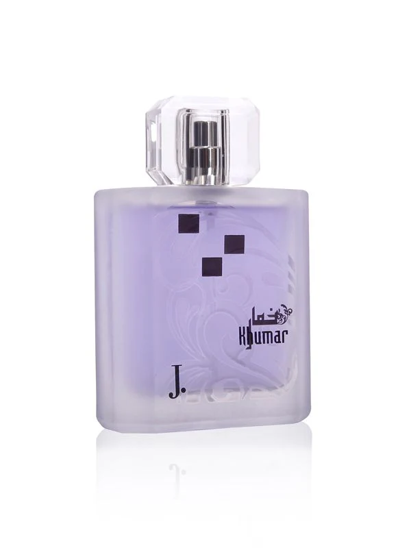

Khumar
Khumar whispers secrets of mystery and allure. Its intoxicating blend creates an aura of intrigue, perfect for evenings where magic lingers in the air. Delicate top notes of jasmine and orange blossom give way to a heart of creamy vanilla and warm spices. The scent deepens with a base of sandalwood and musk, creating an unforgettable trail. Khumar is designed for those who believe in the power of quiet enchantment.
Khumar
- Inspiration: The fragrance concept was inspired by the allure of mystery and the magic of quiet elegance, aiming to leave an unforgettable impression.
- Ingredient Selection: Premium ingredients like jasmine, orange blossom, vanilla, sandalwood, and musk were chosen to create a warm, enchanting aroma.
- Fragrance Formulation: Perfumers carefully blended floral, spicy, and woody notes to craft a fragrance that evolves beautifully over time.
- Bottle and Packaging Design: A sleek and elegant bottle design was created, reflecting the mysterious and enchanting character of Khumar.
- Quality Assurance: Rigorous testing ensured the fragrance achieved the perfect balance of projection, longevity, and charm.
- Launch and Delivery: Khumar was launched with a campaign that highlighted its captivating and mysterious appeal, targeting individuals who value subtle elegance.